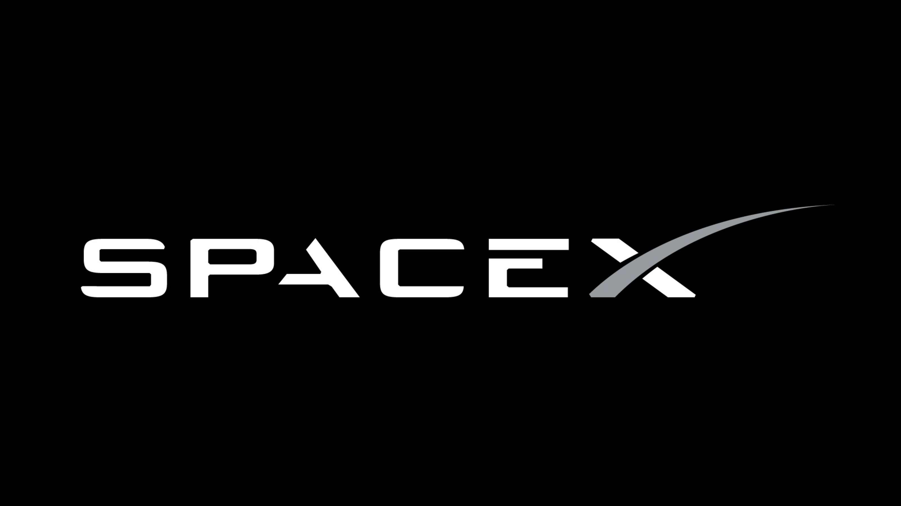

Snelheid van de Raket
We vliegen met 12465.75342 km/h om op tijd in Mars aan te komen.
Hier krijgt u de mogelijkheid om de snelheid van ons raket te versnellen.
note: De benzine zal wel sneller op raken.
Speed (x 1.3k)
Rocket Fuel (x 100k)
Afstand per Maand
De afstand tussen de Aarde en Mars is 54.600.000 km.
Hier kunt u zien hoever we zullen zijn door de maanden heen.
Route Vergelijking
Er zijn veel routes om naar Mars te gaan. Hier kunt u de vergelijking tussen twee routes zien.
note: We nemen de route in de blauwe kleur.
Zwaartekracht
De verder we vliegen de lichter de zwaartekracht wordt om ons heen.
Hier kunt u zien hoe veel keer lichter de zwartekracht zou worden in de aankomende maanden.
Dankuwel voor het kiezen van
